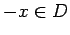
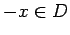
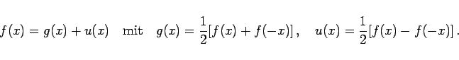
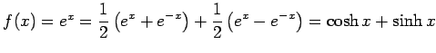

Inhalt Index DeskTop Bronstein

 Funktionen und ihre Darstellung Funktionsbegriff Einige Funktionstypen
Funktionen und ihre Darstellung Funktionsbegriff Einige Funktionstypen


Genügt der Definitionsbereich D einer Funktion f der Bedingung ,,aus  folgt ``, dann ist f als Summe einer geraden Funktion g und einer ungeraden Funktion u darstellbar:
folgt ``, dann ist f als Summe einer geraden Funktion g und einer ungeraden Funktion u darstellbar:
|  | (2.11) |
| Beispiel |
|
 (s. auch Hyperbelfunktionen). |